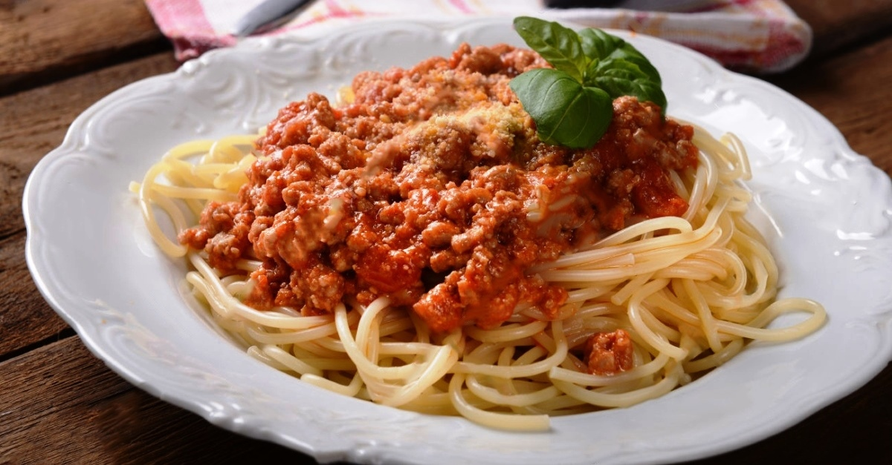

肉醬意粉
了解如何製作肉醬意粉！
介紹
所需材料
步驟
返回

介紹
肉醬意粉是一道意大利傳統美食，以意大利麵條和肉醬為主要食材，口感濃郁、香氣四溢、營養豐富，深受全球各地人們的喜愛。
所需材料
材料
數量
意大利麵
200克
絞肉
150克
洋蔥
1/2個
蒜頭
2瓣
番茄醬
50克
番茄沙司
50克
番茄
1個
鹽
適量
食用油
適量
芝士粉末
適量
意大利香料
適量
步驟
洋蔥和蒜頭切成末。
熱鍋涼油，炒香洋蔥和蒜末，加入絞肉炒至變色。
加入番茄醬、番茄沙司和切碎的番茄，繼續翻炒至肉熟爛。
加入適量清水，煮沸後轉小火慢燉約 20 分鐘，直至湯汁濃稠。
煮意大利麵，加鹽和油，直至熟透撈出。
在意大利麵上放上肉醬，撒上適量芝士粉末和意大利香料，即可品嚐。
聯絡作者
s20181025@qos.edu.hk
更多食譜
愛料理網站